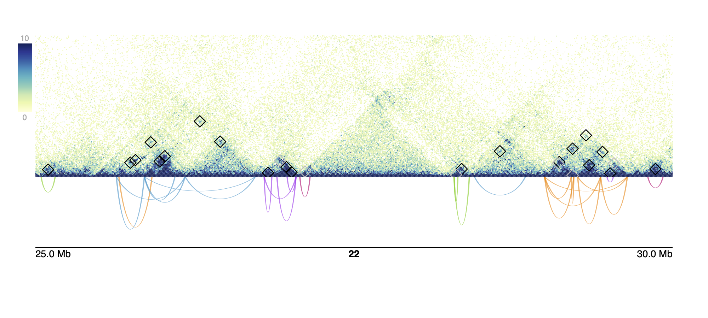

Using loopcity
Sarah Parker
2025-07-27
loopcity.RmdInstallation
This package can be installed via Github:
if (!requireNamespace("remotes", quietly = TRUE))
install.packages("remotes")
remotes::install_github("sarmapar/loopcity")loopcity Pipeline
While loopcity functions can be used in isolation, they
are more powerful used in sequence. There are 4 main steps to call
communities from a .hic file and a
GInteractions object of loops.
Starting with a loop file
If you have a .txt file of loop calls, these can be
converted to a GInteractions object using the package
mariner. Loopcity requires loop anchors to be binned to the
same size, so loops can also be binned using assignToBins
which accepts a loop file, BEDPE-formatted ‘data.frame’-like object, or
GInteractions object.
loopFile <- "../data/GM12878_10KbLoops.txt"
## To read in loop file as-is, use `as_ginteractions`
loops <- read.table(loopFile) |>
mariner::as_ginteractions()
## To bin loops to a certain size, use `assignToBins`
loops <- read.table(loopFile) |>
mariner::assignToBins(binSize = 10e3)Step 1: Merge Loop Anchors using mergeAnchors
Since loop calling can be imprecise, using loop anchors as-is can
lead to multiple anchors representing one biologically relevant region.
By default, any duplicate loops created via this merging are dropped,
but these can be kept by setting dropDups = F.
mergedLoops <- mergeAnchors(loops)In this example, since one bin is 10Kb and pixelOverlap
is 1 by default, all loop anchors within 1 pixel or 10Kb from each other
will be grouped and merged into one representative anchor. The most
common or the middle-most of these anchors is chosen as the new
representative position for all neighboring anchors. Increasing
pixelOverlap to n means all loop anchors
within n pixels, or n * binSize
base pairs will be merged into one position.
The output, mergedLoops, is a GInteractions
object with all the same information from loops but with
adjusted anchor positions.
mergedLoops
#> GInteractions object with 175 interactions and 0 metadata columns:
#> seqnames1 ranges1 seqnames2 ranges2
#> <Rle> <IRanges> <Rle> <IRanges>
#> [1] 22 33910000-33920000 --- 22 34500000-34510000
#> [2] 22 42360000-42370000 --- 22 42830000-42840000
#> [3] 22 32920000-32930000 --- 22 33390000-33400000
#> [4] 22 50320000-50330000 --- 22 50650000-50660000
#> [5] 22 50710000-50720000 --- 22 51050000-51060000
#> ... ... ... ... ... ...
#> [171] 22 42090000-42100000 --- 22 42330000-42340000
#> [172] 22 30680000-30690000 --- 22 30750000-30760000
#> [173] 22 31020000-31030000 --- 22 31470000-31480000
#> [174] 22 25630000-25640000 --- 22 25730000-25740000
#> [175] 22 20760000-20770000 --- 22 20810000-20820000
#> -------
#> regions: 225 ranges and 0 metadata columns
#> seqinfo: 1 sequence from an unspecified genome; no seqlengthsStep 2: Add connections using connectLoopAnchors
Since loop callers are limited to a binary classification of “loop”
or “not a loop”, we can instead create all possible loops and then
create a threshold of what should be kept as a “true” loop based on a
set of flexible parameters. The first step in this process is to create
a set of all possible loops. The connectLoopAnchors
function creates a new set of loops, connecting all anchors to every
anchor within overlapDist. In this example, all anchors
within 1Mb of each other are connected to create new loops.
connections <- connectLoopAnchors(mergedLoops, overlapDist = 1e6)This results in a new GInteractions object, with
original metadata removed and a new metadata column named “source” where
all interactions that were present in the original set of loops are
labeled as “original” and added loops are labeled as “added”.
connections
#> GInteractions object with 1523 interactions and 1 metadata column:
#> seqnames1 ranges1 seqnames2 ranges2 |
#> <Rle> <IRanges> <Rle> <IRanges> |
#> [1] 22 17400000-17410000 --- 22 17530000-17540000 |
#> [2] 22 17400000-17410000 --- 22 17650000-17660000 |
#> [3] 22 17400000-17410000 --- 22 17980000-17990000 |
#> [4] 22 17400000-17410000 --- 22 18310000-18320000 |
#> [5] 22 17530000-17540000 --- 22 17650000-17660000 |
#> ... ... ... ... ... ... .
#> [1519] 22 50930000-50940000 --- 22 51070000-51080000 |
#> [1520] 22 50930000-50940000 --- 22 51130000-51140000 |
#> [1521] 22 51050000-51060000 --- 22 51070000-51080000 |
#> [1522] 22 51050000-51060000 --- 22 51130000-51140000 |
#> [1523] 22 51070000-51080000 --- 22 51130000-51140000 |
#> source
#> <character>
#> [1] original
#> [2] added
#> [3] original
#> [4] added
#> [5] added
#> ... ...
#> [1519] added
#> [1520] added
#> [1521] added
#> [1522] added
#> [1523] original
#> -------
#> regions: 224 ranges and 0 metadata columns
#> seqinfo: 1 sequence from an unspecified genome; no seqlengthsStep 3: Score original and new loops using
scoreInteractions
These added and original connections are then scored based on the
enrichment of the counts of the loop pixel compared to the local
background. The shape and size of this local background can be
customized using the parameters bg for the shape, and
bgSize, bgGap, and fgSize for the
size.
This normalizes contact counts between loop sizes, since shorter
loops typically have higher raw counts. To account for noise in long
range loops with low counts, a pseudocount value of 5 is added to all
raw counts before calculating an enrichment score. This pseudocount
value can be modified by changing the pseudo value.
hicFile <- system.file("extdata", "GM12878_chr22.hic", package = "loopcity")
scores <- scoreInteractions(connections,
hicFile = hicFile)
#> '0' = foreground;
#> 'X' = background;
#> '*' = both;
#> '-' = unselected
#>
#> X X X X X - - - - - -
#> X X X X X - - - - - -
#> X X X X X - - - - - -
#> X X X X X - - - - - -
#> X X X X X 0 - - - - -
#> - - - - 0 0 0 - - - -
#> - - - - - 0 X X X X X
#> - - - - - - X X X X X
#> - - - - - - X X X X X
#> - - - - - - X X X X X
#> - - - - - - X X X X X
#> '0' = foreground;
#> 'X' = background;
#> '*' = both;
#> '-' = unselected
#>
#> X X X X - - - - - - -
#> X X X X - - - - - - -
#> X X X X - - - - - - -
#> X X X X - - - - - - -
#> - - - - - - - - - - -
#> - - - - - 0 - - - - -
#> - - - - - - - - - - -
#> - - - - - - - X X X X
#> - - - - - - - X X X X
#> - - - - - - - X X X X
#> - - - - - - - X X X XThis results in a new InteractionArray containing the
scores for all interactions and metadata such as the name of the .hic
file the counts came from and the number of pseudocounts added. To get
just the GInteraction object with the new
score column, we can run
interactions(scores)
# the `scores` object is an 'InteractionArray' containing extra metadata information
scores
#> class: InteractionArray
#> dim: 1523 interaction(s), 1 file(s), 11x11 count matrix(es)
#> metadata(3): binSize norm matrix
#> assays(3): counts rownames colnames
#> rownames: NULL
#> rowData names(2): source score
#> colnames(1): GM12878_chr22.hic
#> colData names(3): files fileNames pseudocounts
#> type: GInteractions
#> regions: 224
# the interactions of the `InteractionArray` gives back a `GInteractions` object
InteractionSet::interactions(scores)
#> GInteractions object with 1523 interactions and 2 metadata columns:
#> seqnames1 ranges1 seqnames2 ranges2 |
#> <Rle> <IRanges> <Rle> <IRanges> |
#> [1] 22 17400000-17410000 --- 22 17530000-17540000 |
#> [2] 22 17400000-17410000 --- 22 17650000-17660000 |
#> [3] 22 17400000-17410000 --- 22 17980000-17990000 |
#> [4] 22 17400000-17410000 --- 22 18310000-18320000 |
#> [5] 22 17530000-17540000 --- 22 17650000-17660000 |
#> ... ... ... ... ... ... .
#> [1519] 22 50930000-50940000 --- 22 51070000-51080000 |
#> [1520] 22 50930000-50940000 --- 22 51130000-51140000 |
#> [1521] 22 51050000-51060000 --- 22 51070000-51080000 |
#> [1522] 22 51050000-51060000 --- 22 51130000-51140000 |
#> [1523] 22 51070000-51080000 --- 22 51130000-51140000 |
#> source score
#> <character> <DelayedMatrix>
#> [1] original 2.66666666666667
#> [2] added 1.30952380952381
#> [3] original 1.28571428571429
#> [4] added 1
#> [5] added 1.1
#> ... ... ...
#> [1519] added 1.125
#> [1520] added 1.28571428571429
#> [1521] added 0.867324561403509
#> [1522] added 0.895833333333333
#> [1523] original 1.33333333333333
#> -------
#> regions: 224 ranges and 0 metadata columns
#> seqinfo: 1 sequence from an unspecified genome; no seqlengthsStep 4: Assign anchors and loop communities using
assignCommunities
The GInteractions object stored inside
score can then be used to assign communities. This function
builds a network where the nodes are each loop anchor and the edge
weights are the enrichment scores calculated in the previous step. By
default, all loops with a score less than the median score of original
loops are removed. This threshold is printed in a message and stored in
the metadata of the output object in a variable called
pruningValue. This value can be manually set by passing a
value to the pruneUnder parameter.
This network is then passed through a clustering algorithm. The default algorithm is leiden, but other options include “fast_greedy”, “walktrap”, “infomap”, “label_prop”, or “edge_betweenness”. This assigns each loop anchor to a community, and any nodes that are closely bordering a neighboring community are evaluated to determine if they should be included in both communities. If the average score of the border anchor and all anchors in the neighboring community is greater than the average score of all interactions between all the anchors in the current community, then the anchor is assigned to both the original and neighboring community. Loops are assigned to a community if both anchors of the loop are in the same community.
communities <- assignCommunities(InteractionSet::interactions(scores))
#> Pruning added loops with a score less than 1.48611111111111To see the pruning value used to remove edges from the network, run the following code
S4Vectors::metadata(communities)$pruningValue
#> [1] 1.486111Full Workflow
These four functions can be combined into one step by piping the
results from one function into the next. This results in the same final
GInteractions object which contains the merged anchor
locations, enrichment scores for each loop, anchor communities, and loop
communities.
communities <- loops |>
mergeAnchors() |>
connectLoopAnchors(overlapDist = 1e6) |>
scoreInteractions(hicFile = hicFile) |>
InteractionSet::interactions() |>
assignCommunities()
#> '0' = foreground;
#> 'X' = background;
#> '*' = both;
#> '-' = unselected
#>
#> X X X X X - - - - - -
#> X X X X X - - - - - -
#> X X X X X - - - - - -
#> X X X X X - - - - - -
#> X X X X X 0 - - - - -
#> - - - - 0 0 0 - - - -
#> - - - - - 0 X X X X X
#> - - - - - - X X X X X
#> - - - - - - X X X X X
#> - - - - - - X X X X X
#> - - - - - - X X X X X
#> '0' = foreground;
#> 'X' = background;
#> '*' = both;
#> '-' = unselected
#>
#> X X X X - - - - - - -
#> X X X X - - - - - - -
#> X X X X - - - - - - -
#> X X X X - - - - - - -
#> - - - - - - - - - - -
#> - - - - - 0 - - - - -
#> - - - - - - - - - - -
#> - - - - - - - X X X X
#> - - - - - - - X X X X
#> - - - - - - - X X X X
#> - - - - - - - X X X X
#> Pruning added loops with a score less than 1.48611111111111Visualizing Communities
We also provide a function to visualize these communities using the
final GInteractions object returned from
assignCommunities and a .hic file. This returns a pdf of
the given region(s), with each region on each page. The figure contains
a heatmap of hic counts with original loops annotated by black squares
and added loops annotated by grey squares and arches with their height
set to the calculated enrichment score colored by their assigned
community.
plotHicCommunities(pdfName = "plot.pdf",
communities = communities,
hicFile = hicFile,
norm = "NONE",
chroms = 22,
starts = 25e6,
ends = 30e6,
zmax = 10)
sessionInfo()
#> R version 4.5.1 (2025-06-13)
#> Platform: x86_64-pc-linux-gnu
#> Running under: Ubuntu 24.04.2 LTS
#>
#> Matrix products: default
#> BLAS: /usr/lib/x86_64-linux-gnu/openblas-pthread/libblas.so.3
#> LAPACK: /usr/lib/x86_64-linux-gnu/openblas-pthread/libopenblasp-r0.3.26.so; LAPACK version 3.12.0
#>
#> locale:
#> [1] LC_CTYPE=C.UTF-8 LC_NUMERIC=C LC_TIME=C.UTF-8
#> [4] LC_COLLATE=C.UTF-8 LC_MONETARY=C.UTF-8 LC_MESSAGES=C.UTF-8
#> [7] LC_PAPER=C.UTF-8 LC_NAME=C LC_ADDRESS=C
#> [10] LC_TELEPHONE=C LC_MEASUREMENT=C.UTF-8 LC_IDENTIFICATION=C
#>
#> time zone: UTC
#> tzcode source: system (glibc)
#>
#> attached base packages:
#> [1] stats graphics grDevices utils datasets methods base
#>
#> other attached packages:
#> [1] loopcity_0.1.0
#>
#> loaded via a namespace (and not attached):
#> [1] tidyselect_1.2.1 dplyr_1.1.4
#> [3] farver_2.1.2 bitops_1.0-9
#> [5] Biostrings_2.76.0 RCurl_1.98-1.17
#> [7] fastmap_1.2.0 GenomicAlignments_1.44.0
#> [9] XML_3.99-0.18 digest_0.6.37
#> [11] lifecycle_1.0.4 plyranges_1.28.0
#> [13] magrittr_2.0.3 dbscan_1.2.2
#> [15] compiler_4.5.1 progress_1.2.3
#> [17] rlang_1.1.6 sass_0.4.10
#> [19] tools_4.5.1 igraph_2.1.4
#> [21] yaml_2.3.10 data.table_1.17.8
#> [23] rtracklayer_1.68.0 knitr_1.50
#> [25] prettyunits_1.2.0 S4Arrays_1.8.1
#> [27] curl_6.4.0 DelayedArray_0.34.1
#> [29] RColorBrewer_1.1-3 abind_1.4-8
#> [31] BiocParallel_1.42.1 HDF5Array_1.36.0
#> [33] withr_3.0.2 purrr_1.1.0
#> [35] BiocGenerics_0.54.0 desc_1.4.3
#> [37] grid_4.5.1 stats4_4.5.1
#> [39] Rhdf5lib_1.30.0 ggplot2_3.5.2
#> [41] scales_1.4.0 SummarizedExperiment_1.38.1
#> [43] cli_3.6.5 rmarkdown_2.29
#> [45] crayon_1.5.3 ragg_1.4.0
#> [47] generics_0.1.4 rjson_0.2.23
#> [49] httr_1.4.7 cachem_1.1.0
#> [51] rhdf5_2.52.1 assertthat_0.2.1
#> [53] parallel_4.5.1 ggplotify_0.1.2
#> [55] restfulr_0.0.16 BiocManager_1.30.26
#> [57] XVector_0.48.0 matrixStats_1.5.0
#> [59] vctrs_0.6.5 yulab.utils_0.2.0
#> [61] Matrix_1.7-3 jsonlite_2.0.0
#> [63] hms_1.1.3 gridGraphics_0.5-1
#> [65] IRanges_2.42.0 S4Vectors_0.46.0
#> [67] systemfonts_1.2.3 h5mread_1.0.1
#> [69] strawr_0.0.92 jquerylib_0.1.4
#> [71] clustAnalytics_0.5.5 glue_1.8.0
#> [73] pkgdown_2.1.3 plotgardener_1.14.0
#> [75] codetools_0.2-20 gtable_0.3.6
#> [77] GenomeInfoDb_1.44.1 BiocIO_1.18.0
#> [79] GenomicRanges_1.60.0 UCSC.utils_1.4.0
#> [81] tibble_3.3.0 pillar_1.11.0
#> [83] htmltools_0.5.8.1 rhdf5filters_1.20.0
#> [85] GenomeInfoDbData_1.2.14 R6_2.6.1
#> [87] mariner_1.2.1 textshaping_1.0.1
#> [89] Rdpack_2.6.4 evaluate_1.0.4
#> [91] lattice_0.22-7 Biobase_2.68.0
#> [93] rbibutils_2.3 Rsamtools_2.24.0
#> [95] bslib_0.9.0 colourvalues_0.3.9
#> [97] Rcpp_1.1.0 InteractionSet_1.36.1
#> [99] SparseArray_1.8.1 xfun_0.52
#> [101] fs_1.6.6 MatrixGenerics_1.20.0
#> [103] pkgconfig_2.0.3